Homeland
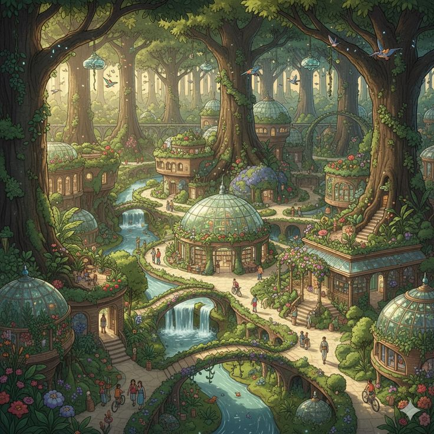
Elven Forests
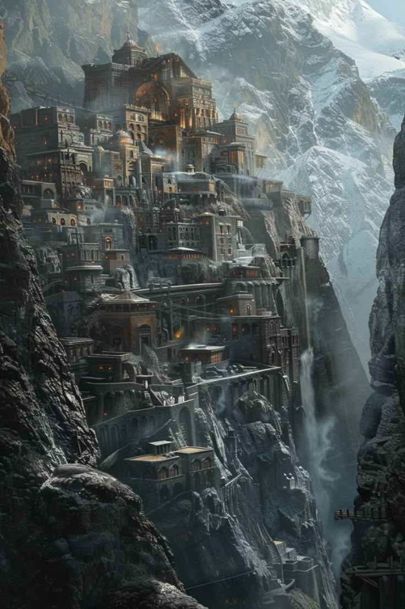
Dwarven Mountains
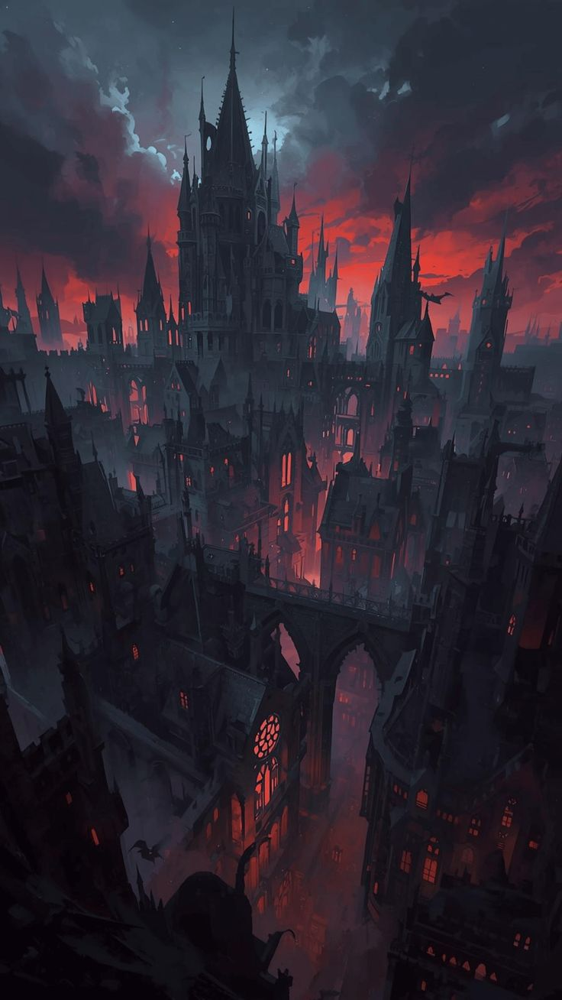
Vampire Castles
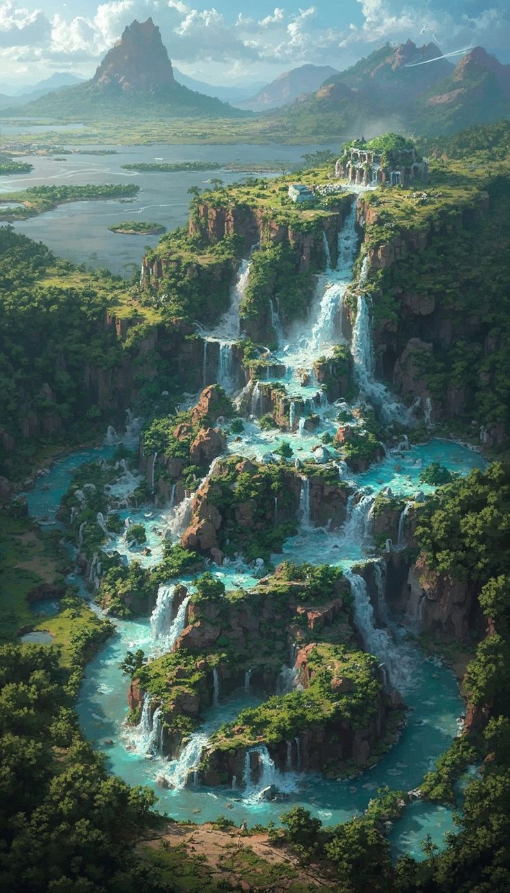
Island of Dragons
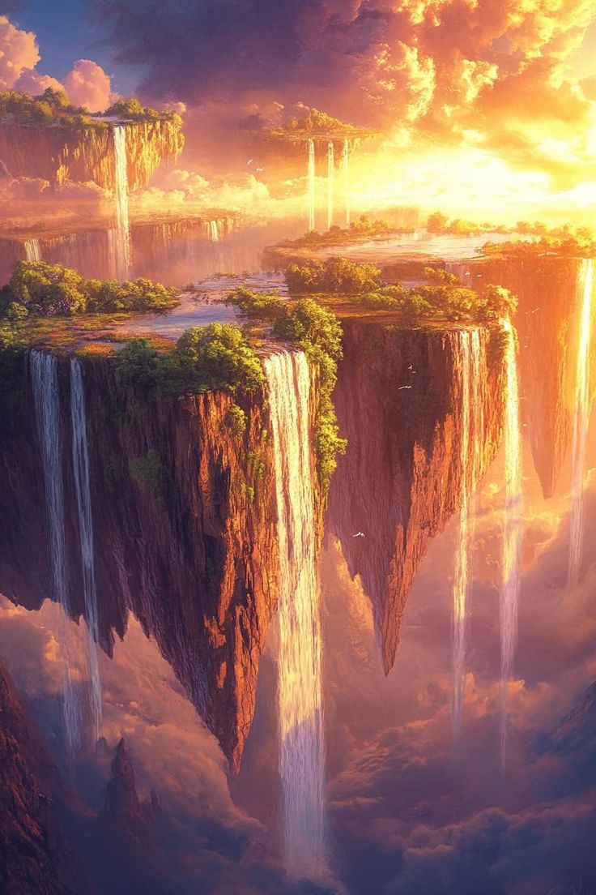
Phoenix Nest

Explore elves, demons, vampires, dragons, and phoenix-people.
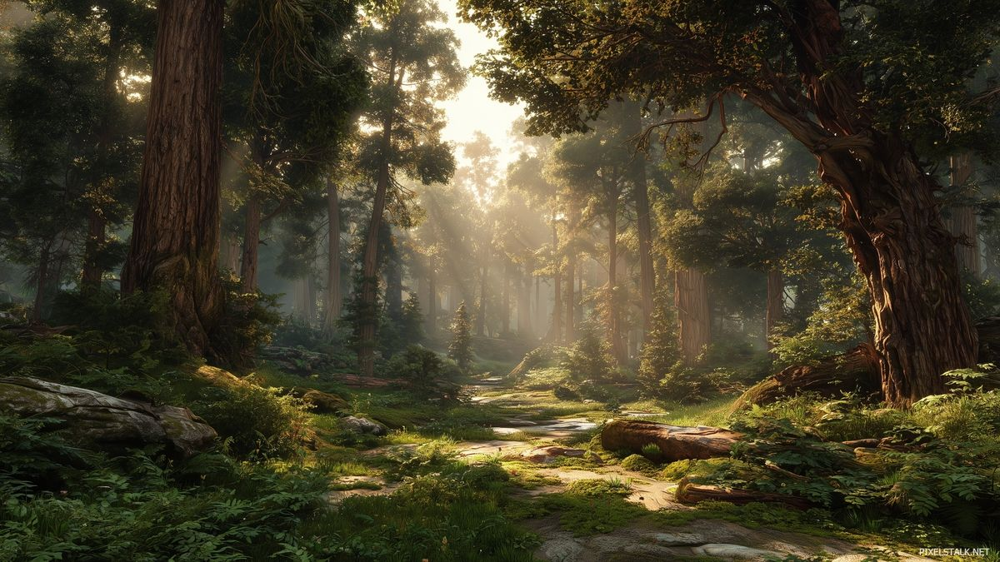
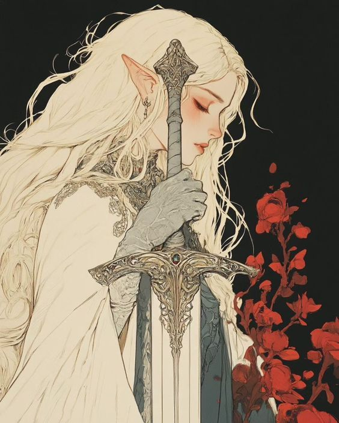
Elves are long-lived, graceful humanoids known for their keen senses, agility, and affinity for magic or nature. Often depicted with pointed ears and ethereal beauty, they excel in archery, spellcraft, and craftsmanship. Elves typically live in secluded forests, enchanted cities, or hidden realms, valuing wisdom, tradition, and harmony with the natural world. While generally peaceful, they can be fierce defenders of their lands. Their longevity grants them perspective and skill, but it also makes them slow to trust and resistant to change, giving them an air of mystery and otherworldly elegance.
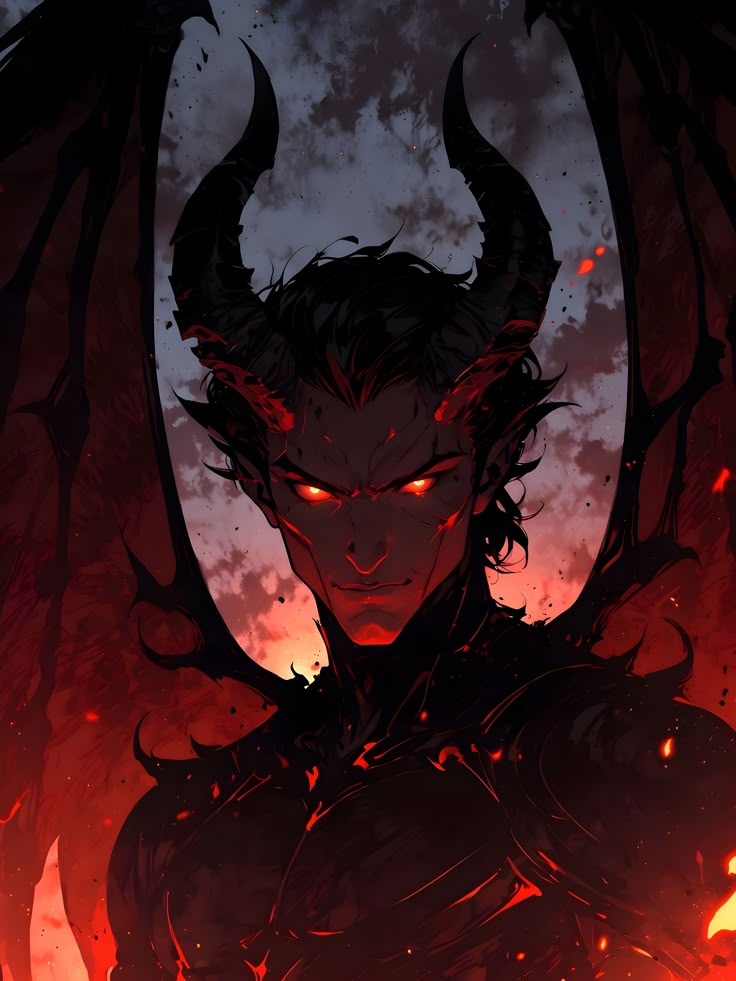
Demons are supernatural beings from corrupted realms such as the Abyss or Infernia, often embodying chaos, destruction, or forbidden desire. They vary widely in form, from monstrous horned creatures to deceptively beautiful humanoids, and many can shapeshift or possess mortals. While lesser demons act on instinct, higher demons are intelligent and manipulative, forming contracts to gain influence over the mortal world. They typically exist within strict hierarchies ruled by powerful demon lords or kings. Though dangerous and often malevolent, demons are bound by certain rules and can be weakened by sacred magic or binding rituals, making them both feared enemies and tempting sources of power.
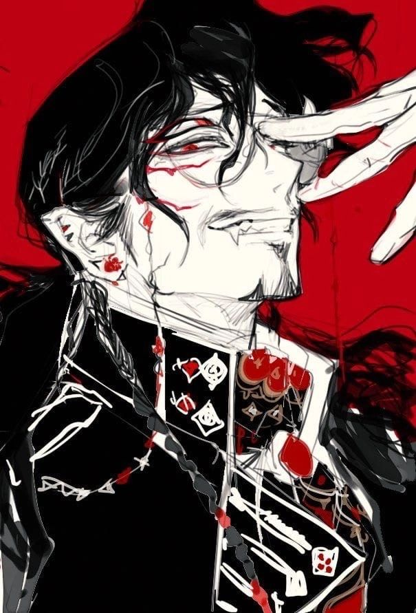
Vampires are immortal, nocturnal beings who sustain themselves by feeding on the blood or life essence of the living. Often appearing as pale, elegant humanoids, they possess enhanced strength, speed, and heightened senses, along with abilities such as shapeshifting, mind control, or shadow manipulation depending on their lineage. Vampires are typically organized into secretive clans or noble houses, with ancient elders ruling over younger generations. While many are predatory and view humans as prey, some maintain a code of restraint or coexistence. Despite their power, they are bound by weaknesses such as sunlight, sacred symbols, and the need to feed, making them both feared hunters and tragic figures cursed with eternal hunger.
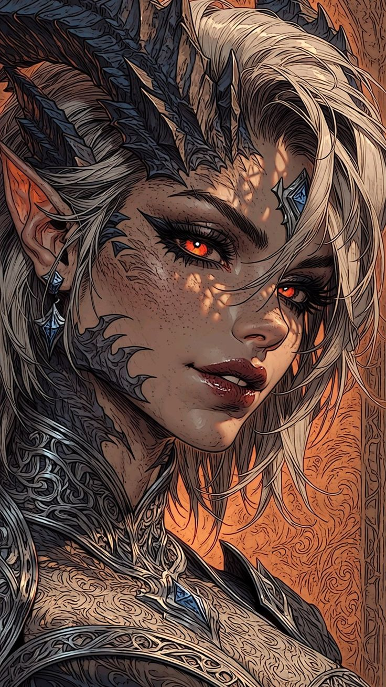
Dragons are ancient, intelligent creatures of immense power, often associated with fire, magic, or elemental forces. They can appear as massive, winged reptiles or assume humanoid forms, retaining their draconic traits such as scales, claws, and eyes that radiate wisdom or menace. Dragons possess extraordinary strength, longevity, and magical abilities, making them both feared and revered across civilizations. Many are solitary, guarding treasures or knowledge, though some form alliances or serve as advisors to mortals. Despite their might, dragons are bound by pride, territorial instincts, and vulnerabilities unique to their kind, making them complex and formidable forces in the world.
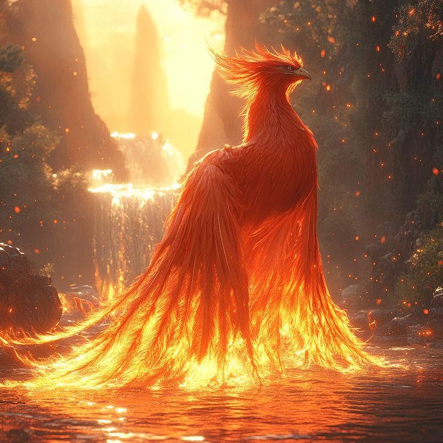
Phoenixes are legendary, immortal birds of flame and light, known for their cycle of death and rebirth from their own ashes. They radiate intense heat and magical energy, often embodying renewal, hope, or divine power. Phoenixes possess healing abilities, fiery attacks, and an innate connection to life and elemental fire. Though rare and elusive, they are intelligent and sometimes form bonds with worthy mortals. Their rebirth grants them resilience, but they are drawn to places of significance and can be vulnerable while regenerating, making them both awe-inspiring and fragile symbols of eternal life.
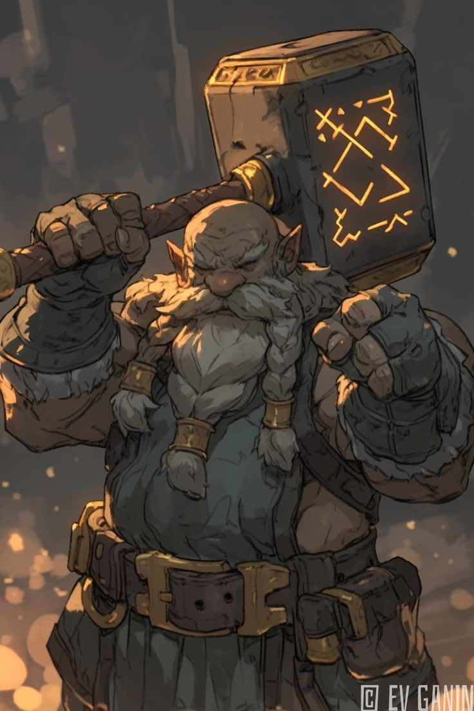
Dwarves are stout, hardy humanoids renowned for their strength, resilience, and masterful craftsmanship, especially in stone, metal, and weaponry. They often dwell in mountainous strongholds or underground cities, valuing honor, tradition, and the wealth of the earth. Dwarves are skilled warriors and miners, with a natural resistance to harsh environments and magic. Though sometimes stubborn or gruff, they are loyal allies and formidable foes. Their long lives allow them to perfect their crafts, making them both industrious and legendary in skill and endurance.





In the beginning, the world was shaped by ancient forces. Dragons ruled the skies, while phoenixes brought balance through cycles of rebirth.
Elves built vast forests of magic, dwarves carved kingdoms into mountains, and vampires formed hidden empires in the shadows of the night.
Conflict erupted between races for control of magic and land. Dragons clashed with demons, and entire regions were reshaped by their battles.
Today, the races exist in a fragile balance. Alliances are forming, but tensions remain as ancient powers begin to awaken once more.